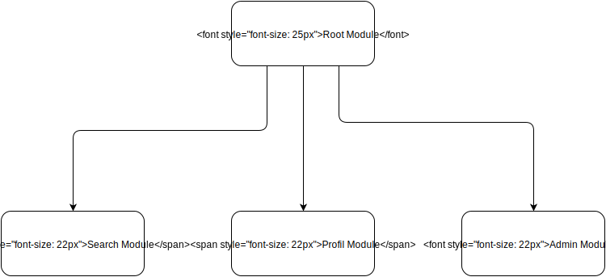
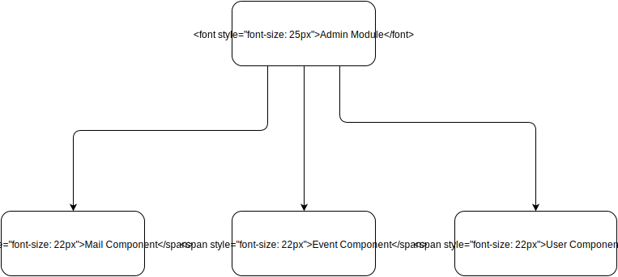
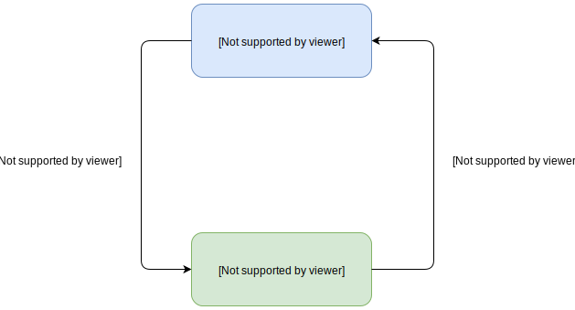
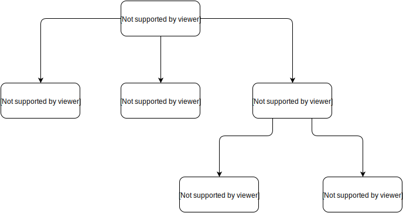

Angular 2 !
Tours.JS #2 & GDG
Valentin Maerten

- Apside TOP
- Polytech Tours
- ToursJS
- Hacking Mondays
- Twitter : @v_maerten
Angular 2
- Framework pour créer des applications Web
- Complete réécriture d'AngularJS
- Sorti en version final le 15 septembre 2016
- Framework basé sur les web components
- Utilise Typescript
Un exemple de composant
Code minimal 1/2
App.component.ts
import { Component } from '@angular/core';
@Component({
selector: 'app-root',
template: `{{title}}
`,
})
export class AppComponent {
title = 'app works!';
}
Code minimal 2/2
index.html
<body>
<app-root>Loading...</app-root>
</body>
Demo
Comment démarrer un projet Angular 2 ?
Angular CLI !
La boite à outils pour Angular 2.
Programme Node, installable avec NPM.
- Créer un projet
- Générer des squelettes de fichier
- Lancer l'application avec un serveur de dev
- Builder l'application
- ...
Les principales commandes
$ ng new APP_NAME
$ ng serve
$ ng generate TYPE NAME
$ ng build --prod
$ ng test
Retour d'expérience
Avantage
- Permet de créer le template de l'application facilement
- Permet de servir & builder le contenu sans configuration
Inconvenient
- L'outil de build est encore très peu performant
L'organisation d'un projet
Les Modules
- Permettent d'organiser le code en block cohérent de fonctionalités
- Au moins 1 module : Le RootModule
- Identifié par le décorateur @NgModule
Une application Angular 2 est un arbre de Module
Les composants
- Morceaux d'interface utilisateur réutilisables dont la mécanique interne nous importe peu
- Un composant possède un template
- La logique du composant est dans une class TS
- Un composant est déclaré dans un Module
Un Module est un arbre de composant
Les services
- Généralement permet une abstraction de la couche d'accès aux données
- Utilise l'injection de dépendance
- Permet de garder le composant petit et réutilisable
- Sont plus facilement testables
Résumé

Focus sur les composants
Communication composant - template
export class MyComponent {
action : string = 'Valider';
changeAction(event) {
this.action = this.action == 'Valider' ? 'Annuler' : 'Valider';
}
}
Conditions et boucles
- {{language}}
export class MyComponent {
isValid : boolean = false;
languages = ['Java', 'Javascript', 'ruby', 'python', 'scala'];
}
Intéraction entre deux composants
Du code !
parent.component.ts
@Component({
selector: 'parent',
template: `
`,
})
export class ParentComponent {
parameter : string = 'toursJs';
oneFunction(event) {
// Event is "ok"
//Do something
}
}
child.component.ts
export class ChildComponent {
@Output() customEvent = new EventEmitter();
//customEvent.emit("ok");
@Input() oneInput: any;
}
Le routeur
Cas typique des routes
Déclarer des routes
const routes: Routes = [
{path: '', component : AppRoot},
{path: 'profil/:id', component : ProfilComponent},
{path: 'dashboard' , component : DashboardComponent,
canActivate: [LoggedInGuard, OnlyAdminGuard]},
];
export const routing = RouterModule.forRoot(routes, { useHash: true });
Utiliser les routes
Dans un template
<a [routerLink]="['/profil', user.id]">
Dans un composant
goToProfil() {
this.router.navigate(['/profil', this.user.id]);
}
Les fonctionnalités avancées
- Nested-view
- Resolver
- Mécanisme de gardien
Les bibliothèques externes
Ajouter une lib externe
- npm install LIB
- Importer le module dans le(s) module(s)
- Utiliser la lib directement dans nos composants
Démo
Conclusion
Retour d'expérience
- Création d'une web app pour Apside à partir de la RC
- A énormement bougé pendant la RC
- Grande communauté
Des ressources
- Le livre des ninjas Squad
- https://egghead.io/
- https://johnpapa.net/
- https://angular.io/docs/ts/latest/tutorial/